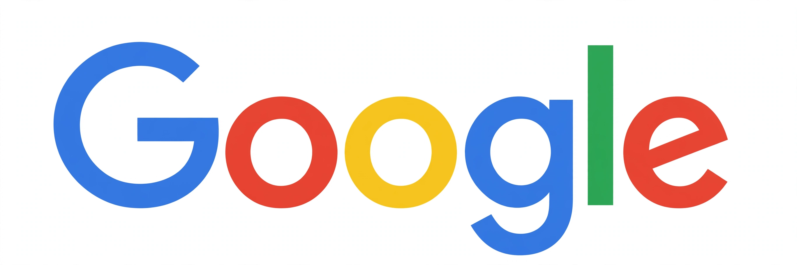

 | |
| Type of site | Search engine |
| Available in | Many languages |
| Founded | September 4, 1998; Menlo Park, California, United States |
| Headquarters | Mountain View, California, United States (the Googleplex) |
| Founders | Larry Page and Sergey Brin |
| Parent | Alphabet Inc. (since 2015) |
| URL | google.com |
| Registration | Optional |
Google LLC is an American multinational technology company known first for its web search engine, and now part of Alphabet Inc. It was founded in 1998 by Larry Page and Sergey Brin while they were doctoral students at Stanford University.
Google's products include Search, Gmail, Google Maps, Google Drive, Chrome, Android, and the video service YouTube, which it acquired in 2006. Most revenue historically comes from advertising.
Contents
History
The company grew out of a research project nicknamed BackRub, which ranked pages by links. It incorporated in 1998, held its initial public offering in 2004, and in 2015 reorganised under a new holding company, Alphabet Inc.
The name is a play on 'googol', the number 1 followed by 100 zeros, reflecting a mission to organise the world's information and make it universally accessible and useful.
Products and services
Search remains the flagship product, handling queries in many languages with results that mix web links, knowledge panels, images, news and local results.
Other major services include Gmail for email, Maps for mapping and directions, Drive and Docs for cloud storage and office work, Photos, Translate, and the Chrome browser.
Criticism
Google has faced sustained criticism and regulatory action over privacy and tracking, search and advertising market dominance, tax arrangements, and content policies in several countries.
See also
Links in the article body and infobox point to related articles and to the site's own homepage, recreated elsewhere in this web.
References
This article is a recreation from memory for the muse-webcrawl experiment. Factual statements are paraphrased; exact citations, page statistics and some dates are recorded as uncertain in the project ledger, not on this page.
External links
Official website — linked from this page to its recreated homepage in this web.